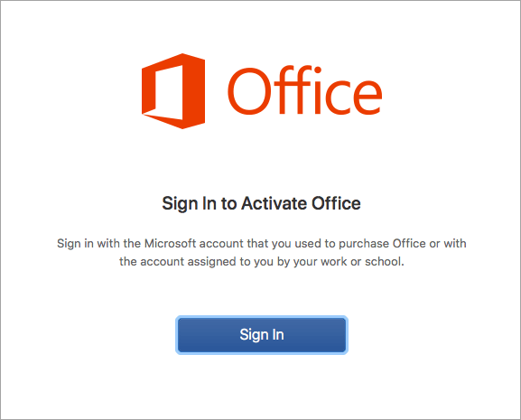

Por qué este problema tiene un contexto más grande.
Durante años, la forma habitual de comprar Office era pagar una vez por una versión concreta. Office 2021 funciona con ese modelo: la licencia te da un derecho de uso permanente de esa edición en un equipo, pero no te convierte en propietario del software ni incluye versiones futuras.
Microsoft 365 funciona distinto. Es una suscripción: pagas por mantener el acceso a las aplicaciones actualizadas, almacenamiento y otros servicios. Cuando dejas de pagar, las aplicaciones pierden parte de su funcionalidad. Para Microsoft es un modelo más predecible, con ingresos recurrentes y una sola línea de producto que cambia continuamente.
Un pago, un equipo y esa versión. Recibe correcciones durante su periodo de soporte, pero no las funciones de la próxima edición.
Pago mensual o anual. Incluye actualizaciones continuas, servicios en la nube y uso en varios dispositivos, mientras la suscripción siga activa.
Microsoft todavía vende Office 2024 como compra única ↗, así que no es exacto decir que ya no existe esa opción. Lo que sí cambió es el centro del negocio: Microsoft promociona la suscripción y concentra allí las funciones nuevas, la nube y la relación continua con el cliente.
Qué significa para Office 2021 en Mac
Office 2021 terminó soporte el 13 de octubre de 2026. La versión 16.113.4, publicada el 6 de octubre, fue la última versión de Office para Mac publicada antes de ese corte. La 16.114 salió el 14 de octubre y la 16.114.1 el 22 de octubre.
Eso no demuestra por sí solo que Microsoft haya “convertido” una licencia perpetua en una suscripción. En este caso concreto, lo que tenemos es una licencia 2021 que sigue apareciendo en la cuenta y una versión posterior que dejó de activarla correctamente. La vuelta a 16.113.4 es una solución comunitaria que todavía estamos validando.
Todo empezó con un mensaje de mi primo.
Tenía Office Hogar y Empresas 2021 en su Mac y me escribió para que le ayudara con un error de licencia. Según me contó, Office se había actualizado y ahora le pedía Microsoft 365. Entramos a su cuenta: la compra de Office 2021 seguía ahí.
Lo primero que intenté fue eliminar las aplicaciones y descargar de nuevo el instalador desde la página del producto. Pero seguíamos en las mismas. Ese instalador ya traía una versión reciente de Office.
Buscando qué podía estar pasando, encontré un hilo en Reddit, en inglés y principalmente orientado a usuarios de Estados Unidos, con un caso muy parecido. Encontré muy poca información útil en español. La propuesta era volver a una versión anterior y quitar Microsoft AutoUpdate para que no la reemplazara otra vez. De ahí salió este proyecto: dejar el contexto, los enlaces y los pasos juntos, en español, para no tener que reconstruir todo desde cero.
¿Entonces mi licencia se convirtió en una suscripción?
No podemos concluir eso solo por el aviso o por el nombre del instalador. Lo que tenemos es un error de activación después de actualizar. La causa exacta aún está por confirmar; esta guía documenta una posible forma de recuperarlo.
Qué vamos a intentar
La idea tiene tres partes. El asistente se encarga de los cambios, pero la copia externa y la comprobación final las haces tú.
- 01Revisar y respaldar
Confirmar la compra, anotar el error y guardar los datos de Outlook.
- 02Volver a 16.113.4
Descargar el paquete oficial y conservar las aplicaciones anteriores.
- 03Retirar AutoUpdate
Quitar el actualizador y comprobar después que puedes trabajar.
Antes de tocar Office, revisa esto.
Si usas Outlook, no te saltes la copia. Los correos de «En mi equipo» pueden estar solo en ese Mac.
Puedes marcar la lista para organizarte. Esto no comprueba tu Mac ni guarda tus respuestas.
Cómo respaldar Outlook, según Microsoft ↗Vamos con el paso a paso.
Puedes abrir el asistente con doble clic o usar Terminal. Las dos opciones hacen lo mismo. Empieza por el diagnóstico: no cambia Office.
Descarga y descomprime la herramienta
Descarga el ZIP del proyecto y descomprímelo. Dentro encontrarás el archivo Office-Update-Fix.command, el script y las instrucciones. El ZIP no incluye Office: el asistente lo descarga directamente de Microsoft.
Abre el asistente y elige Diagnóstico
Haz doble clic en Office-Update-Fix.command, elige Español y luego Diagnóstico. Revisa la versión que muestra para cada aplicación antes de continuar.
Resumen de las opciones; no es una captura de Terminal.
¿macOS no te deja abrirlo?
No hace falta desactivar Gatekeeper. Revisa el código y usa Terminal: escribe cd seguido de un espacio, arrastra la carpeta descomprimida a la ventana y pulsa Enter. Después copia este comando:
bash scripts/office-update-fix.sh diagnose esEjecuta la recuperación cuando tengas la copia lista
En el menú, elige Recuperar Office. Si estás usando Terminal, ejecuta el comando de abajo. Te pedirá confirmar que tienes una licencia válida y una copia externa; más adelante pedirá otra confirmación antes de cambiar las aplicaciones.
bash scripts/office-update-fix.sh recover esEsto es lo que hará el asistente
- Copia las ubicaciones habituales de los datos de Outlook.
- Descarga el instalador 16.113.4 sin Teams y comprueba la firma de Microsoft.
- Guarda las aplicaciones anteriores e instala Word, Excel, PowerPoint, Outlook y OneNote, aunque antes no usaras todas.
- Retira AutoUpdate antes y después de instalar, porque el instalador puede volver a añadirlo.
Ejecuta los comandos tal como están, sin añadir sudo. El asistente pedirá permisos de administrador cuando los necesite. No te pedirá la contraseña de tu cuenta Microsoft.
Abre Word y comprueba que puedes editar
Inicia sesión con la cuenta de la compra de Office 2021. Prueba a crear y editar un documento. Después revisa Excel y PowerPoint. Si el error sigue, anota el mensaje; no borres licencias ni perfiles para seguir probando a ciegas.


Ampliar captura ↗Lo importante aquí es la cuenta: usa la que tiene asociada la compra de Office 2021.
Si solo quieres quitar AutoUpdate
Puedes hacerlo por separado, sin reinstalar Office. Elige Retirar AutoUpdate en el asistente o ejecuta este comando. También pide confirmación y conserva una copia de sus componentes.
bash scripts/office-update-fix.sh remove-autoupdate esCon Outlook, mejor ir con calma.
Después de comprobar Word, revisa tus cuentas, los correos de «En mi equipo», las carpetas, los contactos y los calendarios. Si faltan datos o Outlook pide una migración que no esperabas, detente. No sigas cambiando cosas encima del mismo perfil.
El script no borra perfiles, licencias ni llavero. Aun así, una versión anterior de Outlook podría no entender un perfil que ya se actualizó. Conservar los archivos ayuda, pero no basta para garantizar que todo vaya a abrir igual.
Dónde quedan las copias
El asistente muestra las rutas exactas al ejecutarse. Conserva ambas carpetas hasta revisar todos tus datos; la copia externa sigue siendo necesaria.
~/Library/Application Support/Office Update Fix/run.*/Library/OfficeUpdateFix.*Los perfiles en rutas personalizadas y los datos de otros usuarios necesitan su propio respaldo.
Ver cómo recuperar aplicaciones y datos →¿Y no se va a actualizar otra vez?
Quitar AutoUpdate evita las actualizaciones que pasan por ese programa. Ojo: afecta a todas las aplicaciones que lo usan, no solo a Office. No bloquea App Store, otros actualizadores ni instalaciones manuales.
Además, otro instalador de Microsoft puede volver a ponerlo. Si instalas algo de Microsoft más adelante, ejecuta otra vez el diagnóstico. En la guía de recuperación también explico cómo volver a habilitar las actualizaciones.
Office 2021 terminó su soporte el 13 de octubre de 2026. Quedarte en una versión antigua significa dejar de recibir futuras correcciones de seguridad. Tenlo en cuenta al decidir cuánto tiempo usar esta solución.
De dónde sale todo esto.
Dejo las referencias para que puedas revisar la propuesta por tu cuenta. El hilo de Reddit aporta la experiencia; Microsoft, el instalador y la documentación.
- La conversación que dio origen a la guíaReddit · experiencia de otros usuarios
- El archivo de instaladores de Office para MacMicrosoft · versión del 6 de octubre de 2026
- Las fechas de soporte de Office 2021Microsoft · ciclo de vida
- Cómo activar Office para MacMicrosoft · inicio de sesión y licencia
- Cómo respaldar los datos de OutlookMicrosoft · copias de seguridad
- El script que inspiró la retirada de AutoUpdatemrsarac · proyecto de código abierto
Qué está comprobado y qué falta
Comprobado: disponibilidad del instalador, pruebas aisladas del script y publicación de la guía. Pendiente: instalarlo en el Mac afectado, activar Office 2021 y comprobar los datos de Outlook. No quiero darlo por resuelto antes de esa prueba.